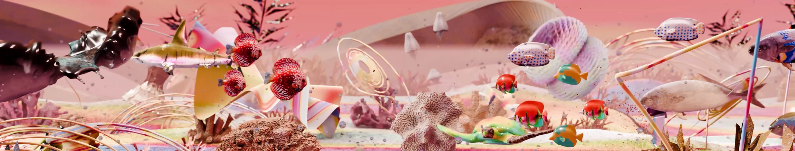
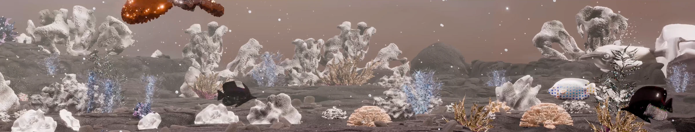
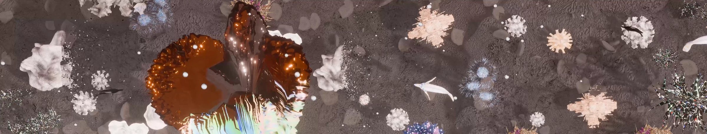
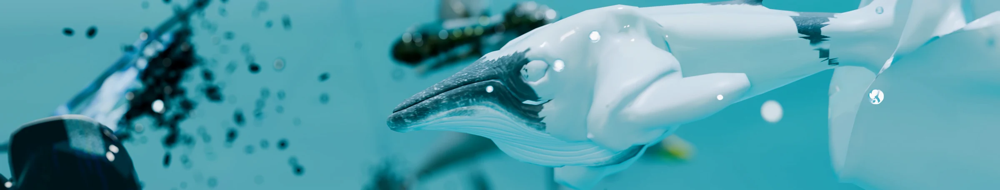
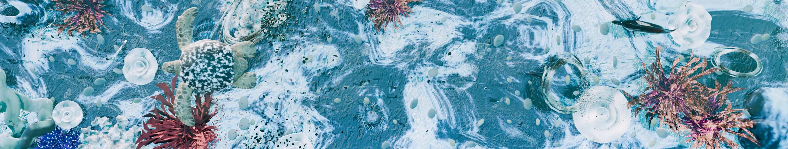
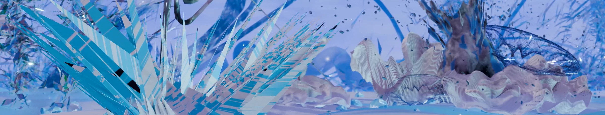
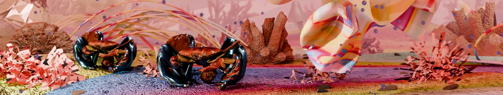
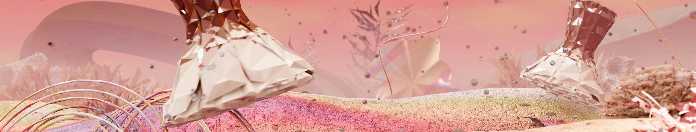
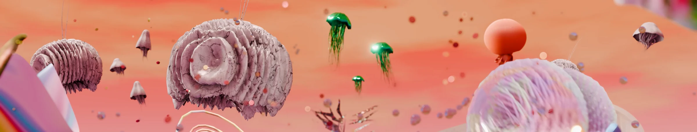

Sea Unseen 보이지 않는 바다
2024 / Artwork by Yoon-Jeong Han
Participated as a 3D Camera, 3D layout
The Atelier Gwanghwa, Sejong, Korea
보이지 않는 바다 (Sea Unseen)는 플라스틱으로 뒤덮인 가상의 미래의 바다 풍경을 보여주는 멀티 채널 영상 작품이다.
영상은 겨울잠에서 깨어난 플라스틱 하이브리드 해양 생명체들이 하나씩 깨어나면서 위로 부유하고 자유롭게 헤엄치면서
바다 속에서 생동감 있는 모습으로 움직이고 서로 연결되고 상호작용하고 교감하면서 보여지는 모습을 그린다.
영상 초반에 겨울의 차갑고 고요한 풍경 속에서 시작하여서,
점점 따뜻한 빛과 색채로 피어나는 생명과 희망을 담은 작품이다.
그리고 언뜻 보기에는 플라스틱 하이브리드 생명체들은 얼핏 보면 화려하고 이국적인 생명체처럼 보이지만,
각 생명체의 형태와 질감은 플라스틱의 인공적인 특성을 반영하고 있어 인류의 손길이 닿은 결과임을 은유적으로 나타낸다.
이는 인간의 무분별한 플라스틱 사용과 그로 인한 환경 오염이 초래할 수 있는 미래를 상징적으로 표현하고 있다.
하지만 영상 말미에는 플라스틱의 오염을 이겨내고 희망차게 새롭게 피어나는 희망의 모습을 보여주며
생명, 바다, 빛에 대한 이야기를 관객에게 선사할 것이다. 보이지 않는 바다 (Sea Unseen)는 단순히 시각적인 아름다움을 넘어서,
해양 생태계에 미치는 인간의 영향을 반추하게 만드는 메시지를 담고 있다.
이 작품은 혹독한 계절 속에서도 생명은 끊임없이 자라나고, 생동감 있는 에너지가 주변을 감싸며 밝은 미래를 향해 나아간다는 메시지를 전한다.








←